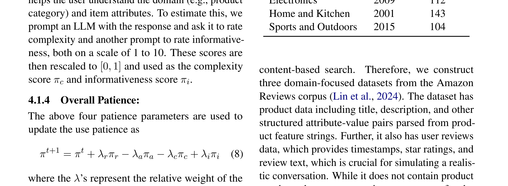
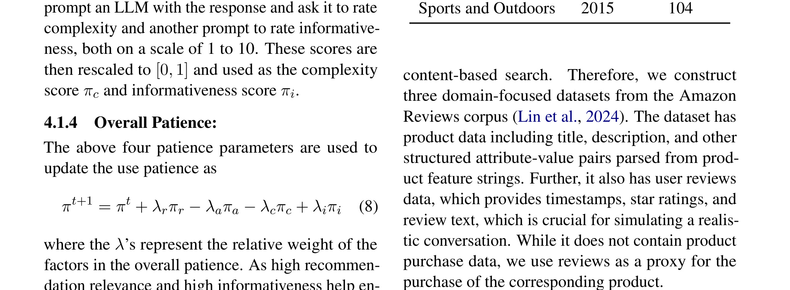
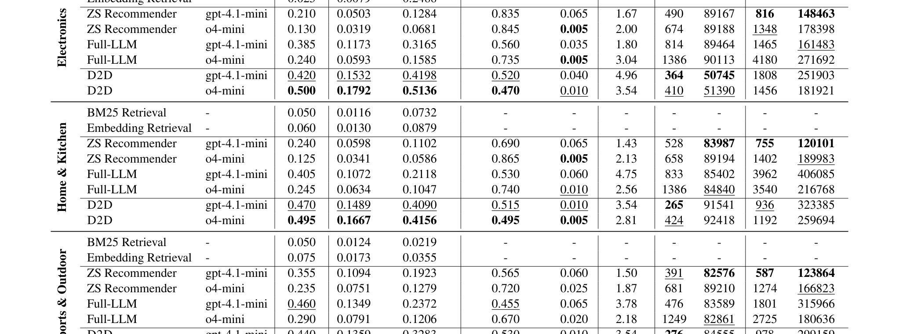
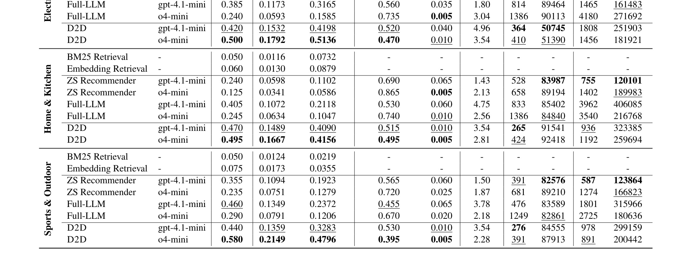

D2D：Dialogue to Discovery：面向会话式商品搜索的属性感知偏好澄清
这篇论文《Dialogue to Discovery: Attribute-Aware Preference Elicitation for Conversational Product Search Assistants》由 Sarthak Harne, Natwar Modani, Debabrata Mahapatra, Shubham Agarwal 完成，一作主机构口径为 多校 / 机构未在摘要页完全核验。论文入口：arXiv:2606.24194，公开日期为 2026-06-23，主类别为 推荐算法，次级标签包括 Conversational Product Search / Preference Elicitation / HCI。代码/项目页状态：摘要页未给出独立代码或项目页；本轮未核验到代码仓库。
会话式商品搜索既不能过早推荐不匹配商品，也不能为了澄清偏好把对话拖得太长；有限屏幕空间让每一次提问和每一次推荐时机都直接影响用户放弃率。
1. 背景和问题
它把 conversational recommender 的核心问题落到属性层级和用户耐心，而不是只做 LLM 对话包装。对电商搜索、商品召回解释和交互式重排有直接工程意义。 从背景上看，D2D 关心的不是单次预测，而是一个更长的系统链条：输入如何被采集，训练信号如何被构造，模型内部状态如何保存，输出又如何反过来影响下一轮数据。这个链条在推荐系统和大模型应用里都很常见。推荐系统有曝光偏差、长尾稀疏、item 表示和用户反馈循环；大模型有提示、工具调用、记忆、检索和自我评估。论文把这些变量显式化后，读者才能判断它解决的是数据问题、结构问题、评估问题还是部署问题。
D2D dynamically uses product attribute structure to prioritize informative questions and decide when to recommend. It curates three Amazon Reviews datasets and reports 22.2-29.9% target-finding accuracy improvement, 6.6-16.1% lower abandonment, and 27.5% shorter conversations over baselines. 这段摘要信息说明，论文至少给出了问题、方法和实验三层证据。需要保守处理的是，arXiv 新稿的代码、数据和线上口径往往还未完全公开；因此本文把作者报告的数值作为论文事实记录，不把它们等同于独立复现结论。
对推荐工程而言，这篇论文的背景价值在于提醒我们不要只看离线平均分。点击、购买、会话满意度、候选覆盖、解释可信度和系统成本经常互相牵制。对大模型工程而言，agent 训练、记忆维护、幻觉检测和检索增强也会遇到类似问题：模型看似更强，但训练数据、教师信号、工具轨迹或梯度观测可能改变了评估分布。
我把 D2D 放进今日精选，是因为它能提供一个可复用的诊断问题：当我们说模型能力提高时，究竟是输入数据更好、训练目标更合适、结构偏置更强、还是评测口径更接近真实任务。只有把这个问题回答清楚，论文才有继续复现和工程转化价值。
进一步看，D2D 也和近期论文形成互补。过去几天已有多篇论文关注生成式推荐、agent memory、RAG、长上下文和后训练。今天这篇的新增价值在于它把其中一个环节拆成可检查的实验对象，而不是只提出更大的模型或更复杂的提示。对知识库沉淀来说，这类论文有助于后续做横向对照。
如果后续要复现，第一步不应直接追求作者的最高分，而应复现最小可观测链路：同一数据切分、同一模型规模、同一训练预算、同一评估脚本，先确认指标趋势是否一致。若最小链路都无法对齐，就不应把论文结论写进生产设计。
2. 方法
2.1 属性结构驱动的问题选择
D2D 的第一层方法是把任务重新拆成可控制的数据或状态单元。作者没有只把输入样本送进一个黑箱模型，而是强调 属性结构驱动的问题选择。这一步的输入是原始任务、用户行为、文档、候选商品或模型输出，输出是更适合训练或评估的结构化信号。真正重要的是信号的来源、难度和噪声被显式记录，而不是简单增加样本量。

Figure 1 在这篇笔记中用于承接 属性结构驱动的问题选择。阅读时要把它看成论文中间状态的可视化，而不是装饰截图：它帮助确认作者如何把原始任务、训练信号、候选对象或评估目标组织成可处理结构。对推荐系统而言，这类图通常对应用户历史、候选召回、item 表示、排序目标和反馈信号；对 LLM 系统而言，它通常对应数据配方、记忆模块、梯度观测、teacher 输出或 agent trajectory。只有这些对象被明确画出，后续实验结果才有解释入口。
从系统角度看，这一层的作用是降低训练和评估之间的口径差异。推荐系统经常依赖点击日志，但点击会被位置、库存、价格、活动和历史曝光影响；大模型系统经常依赖教师输出或自动评分，但教师也有偏差。D2D 把这些信号组织成可审计的中间对象后，后续模块才有可能解释收益来自哪里。
2.2 推荐时机的动态控制
第二层方法是 推荐时机的动态控制。这一步通常承担选择、路由、打分或课程安排的角色：它决定哪些样本进入训练，哪些候选进入比较，哪些中间状态被保留，哪些错误被视作需要修正的信号。**如果这一层没有清楚定义，最终分数即使提升，也很难知道是模型学到了任务结构，还是只记住了某种数据偏置。**
符号解释：$Q_i$ 表示第 $i$ 个样本或候选的质量信号，$D_i$ 表示难度或信息量，$C_i$ 表示成本、噪声或冲突风险，$S_i$ 是综合选择分，$w_i$ 是进入训练或评估时的权重，$\alpha,\beta,\gamma,\tau$ 控制不同信号的权衡。这个公式是对论文机制的结构化表达，用来说明为什么 推荐时机的动态控制 不能只按一个指标排序。
2.3 Amazon Reviews 三数据集与用户耐心仿真
第三层方法是 Amazon Reviews 三数据集与用户耐心仿真。它把前两层产生的结构化信号接到模型训练、推理或评估中，并用实验检查收益是否稳定。对 D2D 来说，关键不是“用了 LLM”或“用了推荐模型”，而是模型在什么阶段读取这些信号：训练前的数据构造、训练中的目标函数、推理时的路由，还是评估后的解释。如果信号只在评估阶段使用，却被写成训练能力提升，就会高估方法的可迁移性。
符号解释：$L_{task}$ 是主任务损失或主评估目标，$L_{align}$ 表示与语义偏好、记忆状态、梯度可靠性或标注一致性的对齐项，$L_{explain}$ 表示解释、理由或可审计输出带来的约束，$\lambda$ 与 $\mu$ 控制辅助目标强度。这个表达帮助读者理解本文方法如何把任务效果、系统可解释性和工程可控性放在同一框架下。
方法部分最值得复现的不是整套系统，而是中间状态。对于 D2D，我会优先检查样本分层、状态更新、评分理由、梯度位置或语义代理是否能独立导出；然后才检查最终榜单或平均准确率。这样做可以避免把一个复杂 pipeline 的收益全部归因于最后一个模型。
3. 实验结果
三套 Amazon Reviews 数据集、multi-factor utilitarian patience 模拟会话和补充用户研究；报告目标找到率、放弃率和平均对话长度。 这些实验结果说明，作者没有只给出单一平均分，而是尝试从任务效果、可靠性、效率或解释性多个角度证明方法价值。不过，本轮没有重新运行训练脚本，也没有核验全部代码，因此报告中的数值只代表论文公开材料。

Figure 2 用于支撑 D2D 的实验讨论。读这张图时我重点看三点：第一，它是否把论文主张拆成数据集、baseline、指标或消融维度；第二，它是否能解释方法为什么有效，而不是只展示一个平均分；第三，它是否暴露了成本、鲁棒性或失败样本。对推荐系统来说，这意味着要看长尾、冷启动、覆盖率、用户交互轮次和线上指标；对大模型来说，则要看模型规模、token/FLOPs、梯度位置、memory 命中和 judge rationale。该图在正文中承担证据锚点作用，帮助后续复现时回到论文自己的变量。

Figure 3 用于支撑 D2D 的实验讨论。读这张图时我重点看三点：第一，它是否把论文主张拆成数据集、baseline、指标或消融维度；第二，它是否能解释方法为什么有效，而不是只展示一个平均分；第三，它是否暴露了成本、鲁棒性或失败样本。对推荐系统来说，这意味着要看长尾、冷启动、覆盖率、用户交互轮次和线上指标；对大模型来说，则要看模型规模、token/FLOPs、梯度位置、memory 命中和 judge rationale。该图在正文中承担证据锚点作用，帮助后续复现时回到论文自己的变量。

Figure 4 用于支撑 D2D 的实验讨论。读这张图时我重点看三点：第一，它是否把论文主张拆成数据集、baseline、指标或消融维度；第二，它是否能解释方法为什么有效，而不是只展示一个平均分；第三，它是否暴露了成本、鲁棒性或失败样本。对推荐系统来说，这意味着要看长尾、冷启动、覆盖率、用户交互轮次和线上指标；对大模型来说，则要看模型规模、token/FLOPs、梯度位置、memory 命中和 judge rationale。该图在正文中承担证据锚点作用，帮助后续复现时回到论文自己的变量。
实验结果的第一层含义是任务收益。对推荐论文，应该看目标找到率、NDCG、CTR、覆盖率、放弃率、错误召回和长尾 query；对 LLM 论文，应该看 agent benchmark、幻觉检测、记忆更新、模型规模、推理成本和消融。D2D 的摘要给出了足够明确的主结果，但仍需要把这些结果放回具体数据集和 baseline 中解释。
第二层含义是机制证据。一个方法如果只在最终分数上领先，而没有说明中间信号如何变化，工程价值会下降。今天选择 D2D，正是因为它提供了可追踪的中间变量：数据配方、记忆模块、梯度层级、属性澄清、LLM 标注、语义代理或课程难度。这些变量使得后续复现可以从小规模诊断开始。
第三层含义是成本与风险。D2D 的结果如果要迁移到生产系统，必须重新计算标注成本、教师调用成本、模型推理延迟、存储开销、用户交互轮次和监控复杂度。论文报告的提升很有价值，但这些提升是否抵消成本，需要具体业务口径。
我还会关注失败样本。推荐系统中的失败可能集中在尾部商品、冷启动用户、短 query、模糊属性或非主流品类；大模型中的失败可能集中在多跳推理、过期记忆、难以验证的答案和高风险领域。D2D 如果后续公开更完整的附录或代码，最值得补看的就是这些 failure buckets。
目前的结论强度应定为“值得跟踪和局部复现”。它已经满足进入日报精选的条件：公开时间新、方向高度相关、问题重要、方法有可迁移结构、实验给出初步证据。但它还没有达到“可以直接指导线上替换”的强度。
实验复现建议采用两步。第一步，固定作者提供的最小配置，复现一个小数据集或一个 benchmark 子集，确认趋势是否存在。第二步，换成自己的日志或任务，检查中间指标是否同向。若只有主指标提升而中间指标不稳定，说明方法可能依赖特定分布。
对于推荐系统团队，D2D 可以转化成离线诊断任务：把用户行为、候选生成、文本语义、LLM judge 或课程标签记录成可回放字段。对于大模型团队，它可以转化成可靠性监控任务：把 memory retrieval、gradient signal、teacher rationale 或 agent trajectory 变成可审计日志。这样即使短期不复现完整模型，也能吸收论文最有价值的系统思想。
最后，实验结果还应和历史论文做对照。若它解决的是同一类数据稀疏、评估偏差或长上下文问题，就要比较它比先前方法多了什么观测变量；若它只是换了模型或数据集，则不应高估新意。D2D 在今天候选池中胜出的原因，是它至少提供了一个新的诊断切口。
4. 总结
D2D 的核心价值在于把 Conversational Product Search / Preference Elicitation / HCI 相关问题从抽象趋势拆成可观察、可训练或可评估的系统环节。它不应被解读为已经解决所有推荐或大模型落地问题，而应被看作一套值得复用的诊断方法。
我的判断是，这篇论文适合进入后续复现清单。第一，它的研究问题和推荐系统/大模型交叉方向高度相关；第二，它给出的机制不是单纯堆模型，而是围绕数据、状态、标注、记忆或评估口径展开；第三，它公开时间新，后续代码和社区复现可能继续补齐。
局限至少有四点。第一，论文结果仍主要来自作者设置，尚未独立复现。第二，摘要页未给出独立代码或项目页；本轮未核验到代码仓库。 第三，LLM 作为 teacher、judge 或 simulator 时可能引入 prompt 偏差和模型版本偏差。第四，生产系统中的延迟、隐私、缓存、库存和灰度约束没有完全体现在论文实验里。
后续跟进建议有三条：先保存 arXiv 版本和摘要事实，等待代码或附录更新；再选择一个最小可复现实验，优先复现中间诊断指标而不是最高分；最后把论文提出的状态变量映射到本地日志，例如 query 属性、候选来源、记忆命中、梯度层级、judge rationale 或课程难度。
如果只把 D2D 当作一篇新论文读，价值会停留在摘要层；如果把它当作一套检查表读，它可以帮助我们改进推荐系统和 LLM 应用的评估方式。真正值得带走的是：模型能力提升必须和数据来源、状态更新、解释证据、成本边界一起报告。
明天继续跟踪时，我会重点看它是否出现项目页更新、代码仓库、第三方复现或会议版本修订。只要这些材料补齐，就可以把今天的精读笔记升级为复现计划。